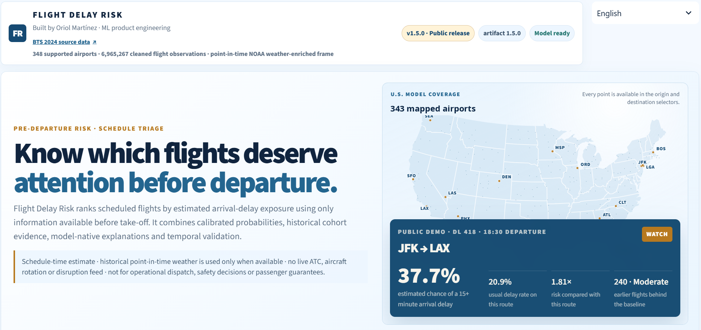
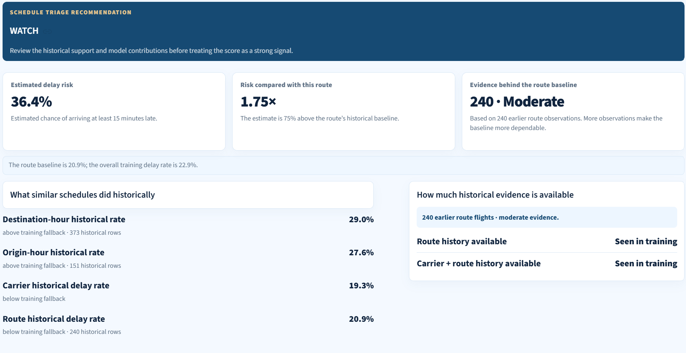
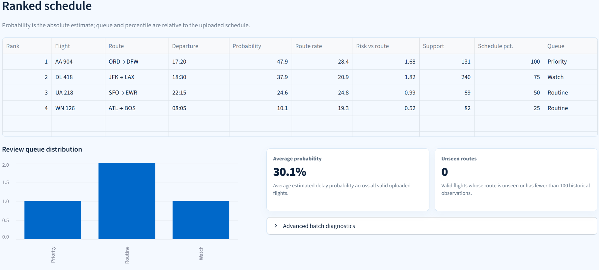
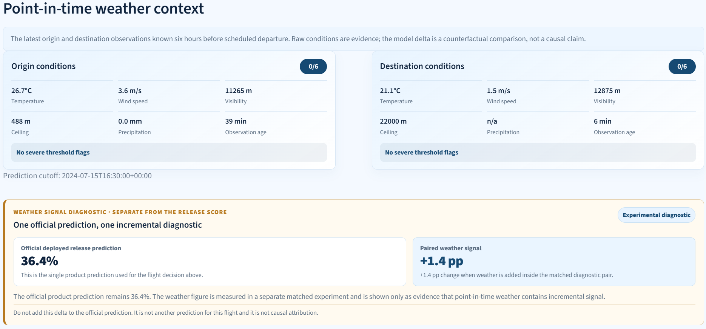
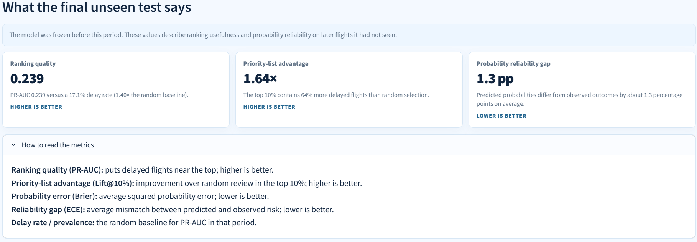

Project 01
FDR · v1.5.0
Independent project01 / 06
Flight Delay Risk
Pre-departure delay prediction for risk-based operations.
An end-to-end supervised learning system that scores scheduled flights using only pre-departure data. The pipeline compares model families, integrates point-in-time NOAA weather, calibrates probabilities and validates on chronological holdouts before producing a ranked operations queue.
[01]
1.64×
Top-decile prioritisation lift
[01]
28.0%
Precision in the priority queue
[01]
1.3 pp
Final-test calibration gap
[01]
50,453
Flights in untouched temporal test
Interface evidence
05 frames
Product screens

348 model-supported · 343 mapped

A single flight, with its contributing evidence

The ops queue, ranked by risk

Real NOAA conditions, paired per flight

Calibration and temporal validation
Product walkthrough
Demo 01
See the system in motion
Click to open playerPre-departure workflow